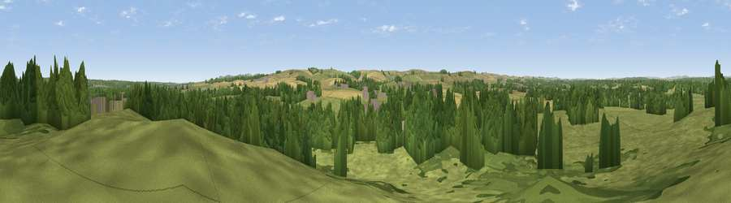

Viewpoint near East Knighton
#28876 in England · top 60% of its area beats it · near East KnightonWhere it is
The exact computed spot (SY 80625 86325). Click the marker for map links.
The view, rendered

A 360° render of this exact spot computed from the terrain model, tree cover and land cover — summer colours, afternoon light, calibrated against photographs of famous viewpoints. Real trees, hedges and buildings will differ in detail.
The panorama
Grey silhouette: terrain skyline in each direction (720 bearings, Earth curvature and refraction included). Dashed green: skyline with trees (+15 m) and buildings (+8 m) as obstacles. Blue strip: how far the ground is visible on each bearing.
Where the view opens
Wedge length = distance to the farthest visible ground on that bearing (vegetation-aware). Rings at 10, 25 and 50 km.
What fills the view
53% grassland · 33% woodland · 12% cropland · 2% built-up
Angular shares of the visible panorama (visual magnitude), not map area. Landscape diversity 0.46 (0–1 Shannon).
Key numbers
More beautiful places nearby
The staircase of upgrades: each row has a higher view potential than everything closer. Driving times are estimates from straight-line distance, calibrated against real road routing — check an actual route before setting out.
| Place | Direction | Drive | Score |
|---|---|---|---|
| Viewpoint near Wool | E · 4 km | ~10 min | 46.3 |
| Chideock Down | SSW · 5 km | ~12 min | 83.5 |
| Viewpoint near Chaldon Herring | SSW · 6 km | ~12 min | 83.8 |
| Bindon Hill | SSE · 7 km | ~14 min | 84.5 |
| Rings Hill | SE · 8 km | ~17 min | 87.5 |
| Viewpoint near Abbotsbury | W · 25 km | ~40 min | 89.0 |
| Viewpoint near West Bexington | W · 26 km | ~42 min | 89.5 |
| The Knoll | W · 27 km | ~43 min | 91.0 |
50.67626, -2.27557 · source: screening · position refined by local search. Computed location — check access rights before visiting.